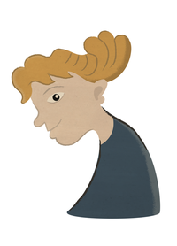

Adam of Loughor Aged 13 in 1290

Labourer from Swansea
Role: witness
Adam had known William Cragh for a couple of years before he was hanged.
Witness events timeline...Key contributions to narrative
- Saw William Cragh being led out of the town by the Lord de Briouze’s men
- Did not dare to touch the body, but thought William Cragh was dead
- Saw William Cragh being carried to the burgess’s house
- Two weeks later he was ‘greatly amazed’ to see William Cragh alive